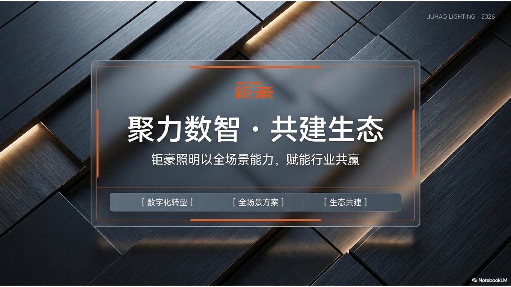

TRUSTED BY — 服务与合作过的企业
从业务问题出发，拆流程、接数据、建Agent、做自动化。
最后只看结果：降本、提效、产内容、拿线索、促成交。
01 / WHAT I SOLVE
我的工作正在解决什么问题
AI不应该只是一个工具。真正有价值的AI，应该进入企业每天正在发生的工作。我现在重点推动四个方向。
02 / SERVICES
我的企业服务
从一个AI工具，到一套真正能够运行的AI生产力系统。
03 / CONTENT GROWTH
从“一个人做内容”
到“企业AI内容工厂”
过去：一个人，拍一个视频，剪一个视频，运营一个账号。
现在：一个内容中台 × AI批量生产 × 多门店 × 多账号 × 多城市分发。
内容生产→矩阵分发→流量获取→客户线索→销售转化
搭建我的内容矩阵
04 / METHODOLOGY
我的核心方法论：AI × BUSINESS
AI不是一个部门，未来AI会进入每一个部门。我的方法不是从AI技术出发，而是从业务出发，重新设计企业工作方式。
05 / FRAMEWORK
我的AI落地框架
八个步骤，从发现问题到规模复制。点击查看每一步做什么。
06 / AI LAB
AI落地实验室
不是作品展示，而是正在实践的项目——每一个都在回答同一个问题：AI如何进入真实业务。
真实影像— REAL FOOTAGE
真实，比科技感更有说服力。以下是实拍讲课、培训与项目现场。

07 / ABOUT
关于周威俊
企业AI实践者、数字化增长推动者。现阶段主要研究：AI如何真正进入企业经营。
长期参与企业数字化、品牌、内容、营销、产品、系统建设。因此我关注AI的角度与单纯技术人员不同——我很少讨论哪个模型跑分最高，我更关心：这个AI能不能进入业务，能不能帮助员工提高效率，能不能降低成本，能不能帮助企业获得客户，能不能形成长期竞争力。
“AI的真正竞争，不是模型竞争，而是企业应用能力的竞争。”
08 / IP — AI一天，人间一年
企业缺的不是AI新闻，
而是判断。
每天都有新模型、新Agent、新视频技术、新机器人、新工作方式。哪些值得关注？哪些只是噱头？哪些可以马上使用？哪些会改变企业、改变行业？「AI一天，人间一年」专注帮助更多企业管理者理解AI真正正在发生什么。
用 AI 重构效率
用内容重构增长
用数字化重构门店
09 / DAILY AI RADAR
最新AI洞察
每天自动更新来自 OpenAI、Google AI、NVIDIA、Microsoft AI 的官方动态，并附上我的企业视角解读。
10 / AI READINESS CHECK
60秒企业AI就绪度自测
回答 5 个问题，立即看到你的AI就绪度评级，以及最应该先启动的落地方向。
11 / WHO I SERVE
更适合以下企业
12 / HOW WE WORK
合作方式
13 / THE VALUE
AI真正的价值
不是让企业多一个软件，而是——
少一些重复工作。多一些高价值工作。
少一些人工成本。多一些内容和客户。
少一些低效率流程。多一套企业真正属于自己的AI能力。
我们的企业应该怎样用AI？
哪些岗位可以AI化？
Agent到底应该怎么做？
短视频怎么批量生产？
几十家门店如何一起做内容？
AI怎么真正带来客户？